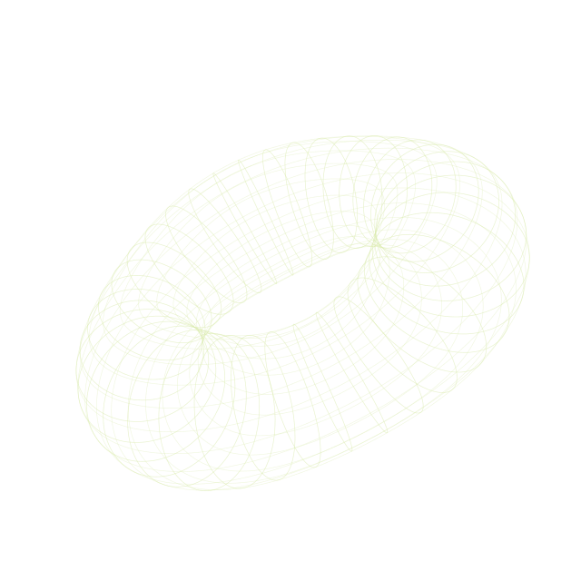

01
Learning the fundamentals
Mathematical analysis, higher algebra, general physics, data structures, and algorithmic thinking.
THE GRAMMAR OF FUTURE WORKPEKING UNIVERSITY · COLLEGE OF ENGINEERING
Between rigorous structure
and imaginative construction.

x → ideay → experimentz → understandingI’m an undergraduate at Peking University, finding my way through mathematics, embedded systems, and AI agents.
I like turning abstract ideas into working prototypes, and confusing questions into clearer models. For me, engineering is a disciplined way of seeing — a conversation between what we imagine and what actually works.
Away from the technical side, photography, literature, and writing remind me to pay attention to the human experience.
Find me on GitHubNot a finished map.
A few directions I keep returning to.
Mathematics gives me a language for describing structure precisely. I’m building foundations in analysis, linear algebra, and physics, with a curiosity for the geometry behind the symbols.
On my mind: eigenvalues, geometric intuition, optimization, and how abstract concepts become computational tools.
I’m drawn to the small, concrete details that make hardware behave correctly: signals, sensors, motion, and imperfect real-world feedback.
The question: how do you turn a clean idea into a system that works under messy constraints?
I’m exploring how agents reason, interact, remember, and support human creativity while keeping human judgment at the center.
Earlier game-agent experiments are paused. The broader question remains: how should intelligent tools cooperate with us?
Building foundations, trying small things,
leaving space for what comes next.
Mathematical analysis, higher algebra, general physics, data structures, and algorithmic thinking.
THE GRAMMAR OF FUTURE WORKPython, web design, embedded development, and local AI-assisted workflows. Small prototypes to test bigger ideas.
MAKE IT. TEST IT. REVISE IT.Photography, literature, and essays. Keeping technical curiosity connected to life beyond the screen.
CLARITY IS A HABIT OF ATTENTIONNo flagship project for now. This notebook leaves room for future work, notes, and prototypes.
你今日因何而疑惑？
Bring a question. Leave with another way to see it.
What would a simple prototype reveal in one afternoon?
Questions, shared interests, or an interesting idea.
I’d be glad to hear from you.